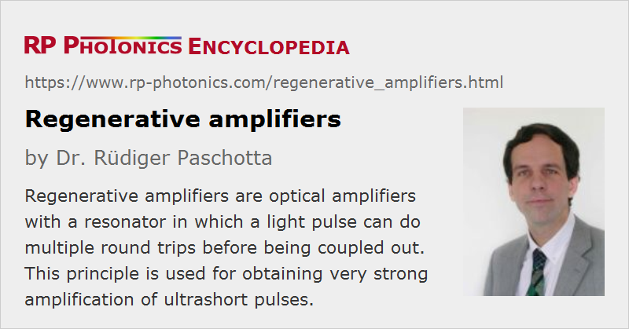

Regenerative Amplifiers
Definition: optical amplifiers with a resonator in which a light pulse can do multiple round trips before being coupled out
More general term: optical amplifiers
German: regenerative Verstärker
Categories: optical amplifiers, light pulses
How to cite the article; suggest additional literature
Author: Dr. Rüdiger Paschotta
A regenerative amplifier is a device which is used for strong amplification of optical pulses, usually with ultrashort pulse durations in the picosecond or femtosecond domain (→ ultrafast amplifiers). Multiple passes through the gain medium (nearly always a solid-state medium) are achieved by placing the gain medium in an optical resonator, together with an optical switch, usually realized with an electro-optic modulator and a polarizer. As the number of round trips in the resonator can be controlled with the optical switch, it can be very large, so that a very high overall amplification factor (gain) is achieved.
Note that although a pulse makes multiple passes in a regenerative amplifier, the term multipass amplifier is often reserved for a device where a fixed number of passes is obtained – not with an optical switch, but just according to the geometric beam path. It would be more natural, though, to consider a regenerative amplifier as one type of multipass amplifier.

Operating Principle of a Regenerative Amplifier
The principle of operation can be understood as follows:
- First, the gain medium is pumped for some time, so that it accumulates some energy.
- Then, the initial pulse is injected into the resonator through a port which is opened for a short time (shorter than the round-trip time) with an electro-optic (or sometimes acousto-optic) switch.
- After that, the pulse can undergo many (possibly hundreds) of resonator round trips, being amplified to a high energy level.
- Finally, the pulse is released from the resonator. This can be achieved either with a second electro-optic switch, or with the same one as used for coupling in.
This principle makes it possible to achieve very high gain and thus pulse energies in the millijoule range with amplifiers of moderate size, or even higher energies with larger devices. Typical pulse repetition rates are of the order of 1 kHz (although repetition rates of hundreds of kHz are sometimes possible), whereas the highest pulse energies are achieved at lower repetition rates.
Note that the seed laser, normally a mode-locked laser, may have a much higher pulse repetition rate of e.g. several hundred megahertz; only a small number of the generated seed pulses is used by the amplifier.
For high repetition rates (e.g. tens of kilohertz or higher), the amplifier gain medium is usually pumped continuously. For lower repetition rates (particularly for pulse periods well above the upper-state lifetime), pulsed pumping (e.g. with a Q-switched laser) is preferable. A common configuration is to use a frequency-doubled YAG laser to pump a regenerative Ti:sapphire amplifier.
Various Issues
Pulse injection and ejection require the use of a Pockels cell and a Pockels cell driver with a low switching time (well below the resonator round-trip time) and precision. These requirements are substantially more challenging than those for simple Q switching of a laser, for example.
The duration of the amplified pulses may be increased due to the limited gain bandwidth of the amplifier medium, which reduces the pulse bandwidth. This so-called gain narrowing effect may be reduced by inserting a properly designed spectral filter in the amplifier, which makes the net gain spectrum wider and more flat.
At least in femtosecond devices, the chromatic dispersion introduced by the Pockels cell has to be carefully compensated. Nonlinear effects may also occur; these can be effectively suppressed with the methods of chirped-pulse amplification or divided-pulse amplification. If this is not done, the obtainable pulse energy may be limited by nonlinear effects or even optical damage phenomena.
The power efficiency of a regenerative amplifier can be severely reduced by the effect of intracavity losses (particularly in the electro-optic switch). Note that the sensitivity to such losses is particularly high in cases with low round-trip gain, because this increases the number of resonator round trips required to achieve a certain overall amplification factor.
Regenerative amplifiers can also have a reduced gain and power efficiency due to a finite lower-state lifetime, leading to a significant population of the lower laser level during amplification of a pulse, and thus to reabsorption on the laser transition. This problem occurs primarily in amplifiers for very short pulses, but not with chirped-pulse amplification, where the pulse duration within the amplifier is relatively large.
For some applications, it is important to keep the energy of any satellite pulses very low, i.e. to achieve a high pulse contrast. Such satellite pulses can occur in various ways, e.g. via imperfect switching of the Pockels cell or parasitic reflections in the amplifier. An additional pulse picker may be used to suppress pre- and post-pulses.
For high pulse repetition rates, it can happen that the pulse amplification process exhibits strong fluctuations. Bifurcations with period doubling can also occur, where the pulse energy first alternates between two values, later four or even eight values. For further increased repetition rates, this can lead into deterministic chaos [8, 9, 12]. Fig 2 shows a numerical example case.
A common gain medium for regenerative amplifiers is Ti:sapphire, which has a broad gain bandwidth and high thermal conductivity. Other gain media, e.g. doped with ytterbium or neodymium, are suitable for diode pumping and have a good energy storage capability due to their long upper-state lifetimes, but the generated pulses are longer (typically hundreds of femtoseconds or more) due to the smaller gain bandwidth.
Applications of regenerative amplifiers include material processing (e.g. cutting of metals with millijoule pulse energies) and scientific experiments e.g. in high-intensity physics, such as high harmonic generation.
Alternatives
A possible alternative to a regenerative amplifier is a multipass amplifier, where multiple passes (each time with a slightly different propagation direction) are arranged with a set of mirrors. This approach does not require a fast modulator, but becomes complicated (and hard to align) if the number of passes through the gain medium is high. As a rule of thumb, a multipass amplifier may be more appropriate for very high pulse energies if a limited gain is required (because the input pulse energy is already relatively high), whereas a regenerative amplifier is more suitable for very high gains. Of course, both approaches can be combined: a regenerative amplifier provides the high gain, and a final multipass amplifier stage boosts the energy (→ amplifier chains, ultrafast amplifiers).
Another technique for reaching high pulse energies, although not nearly as high as with regenerative amplifiers, is cavity dumping of a mode-locked laser. This technique is particularly suitable for very high pulse repetition rates of several megahertz.
Suppliers
The RP Photonics Buyer's Guide contains 10 suppliers for regenerative amplifiers. Among them:
Questions and Comments from Users
Here you can submit questions and comments. As far as they get accepted by the author, they will appear above this paragraph together with the author’s answer. The author will decide on acceptance based on certain criteria. Essentially, the issue must be of sufficiently broad interest.
Please do not enter personal data here; we would otherwise delete it soon. (See also our privacy declaration.) If you wish to receive personal feedback or consultancy from the author, please contact him e.g. via e-mail.
By submitting the information, you give your consent to the potential publication of your inputs on our website according to our rules. (If you later retract your consent, we will delete those inputs.) As your inputs are first reviewed by the author, they may be published with some delay.
Bibliography
| [1] | J. E. Murray and W. H. Lowdermilk, “Nd:YAG regenerative amplifier”, J. Appl. Phys. 51 (7), 3548 (1980), doi:10.1063/1.328194 |
| [2] | W. H. Lowdermilk and J. E. Murray, “The multipass amplifier: theory and numerical analysis”, J. Appl. Phys. 51 (5), 2436 (1980), doi:10.1063/1.328014 |
| [3] | G. Vaillancourt et al., “Operation of a 1-kHz pulse-pumped Ti:sapphire regenerative amplifier”, Opt. Lett. 15 (6), 317 (1990), doi:10.1364/OL.15.000317 |
| [4] | K. Wynne et al., “Regenerative amplification of 30-fs pulses in Ti:sapphire at 5 kHz”, Opt. Lett. 19 (12), 895 (1994), doi:10.1364/OL.19.000895 |
| [5] | C. Horvath et al., “Compact directly diode-pumped femtosecond Nd:glass chirped-pulse-amplification laser system”, Opt. Lett. 22 (23), 1790 (1997), doi:10.1364/OL.22.001790 |
| [6] | S. Biswal et al., “Efficient energy extraction below the saturation fluence in a low-gain low-loss regenerative chirped-pulse amplifier”, J. Sel. Top. Quantum Electron. 4 (2), 421 (1998), doi:10.1109/2944.686750 |
| [7] | J. Kawanaka et al., “30-mJ, diode-pumped, chirped-pulse Yb:YLF regenerative amplifier”, Opt. Lett. 28 (21), 2121 (2003), doi:10.1364/OL.28.002121 |
| [8] | J. Dörring et al., “Period doubling and deterministic chaos in continuously pumped regenerative amplifiers”, Opt. Express 12 (8), 1759 (2004), doi:10.1364/OPEX.12.001759 |
| [9] | D. Müller et al., “Picosecond thin-disk regenerative amplifier”, Proc. SPIE 5120, 281 (2004), doi:10.1117/12.515524 |
| [10] | I. Matsushima et al., “10 kHz 40 W Ti:sapphire regenerative ring amplifier”, Opt. Lett. 31 (13), 2066 (2006), doi:10.1364/OL.31.002066 |
| [11] | M. Larionov et al., “High-repetition-rate regenerative thin-disk amplifier with 116 μJ pulse energy and 250 fs pulse duration”, Opt. Lett. 32 (5), 494 (2007), doi:10.1364/OL.32.000494 |
| [12] | M. Grishin et al., “Dynamics of high repetition rate regenerative amplifiers”, Opt. Express 15 (15), 9434 (2007), doi:10.1364/OE.15.009434 |
| [13] | E. Caracciolo et al., “28-W, 217 fs solid-state Yb:CAlGdO4 regenerative amplifiers”, Opt. Lett. 38 (20), 4131 (2013), doi:10.1364/OL.38.004131 |
| [14] | H. Fattahi et al., “High-power, 1-ps, all-Yb:YAG thin-disk regenerative amplifier”, Opt. Lett. 41 (6), 1126 (2016), doi:10.1364/OL.41.001126 |
| [15] | M. Ueffing et al., “Direct regenerative amplification of femtosecond pulses to the multimillijoule level”, Opt. Lett. 41 (16), 3840 (2016), doi:10.1364/OL.41.003840 |
| [16] | R. Paschotta, case study on a regenerative amplifier |
See also: multipass amplifiers, ultrafast amplifiers, chirped-pulse amplification, ultrashort pulses, titanium–sapphire lasers, cavity dumping, electro-optic modulators, Pockels cells, Pockels cell drivers, lower-state lifetime, The Photonics Spotlight 2008-06-20
and other articles in the categories optical amplifiers, light pulses

This encyclopedia is authored by Dr. Rüdiger Paschotta, the founder and executive of RP Photonics Consulting GmbH. How about a tailored training course from this distinguished expert at your location? Contact RP Photonics to find out how his technical consulting services (e.g. product designs, problem solving, independent evaluations, training) and software could become very valuable for your business!
|  |
If you like this page, please share the link with your friends and colleagues, e.g. via social media:
These sharing buttons are implemented in a privacy-friendly way!